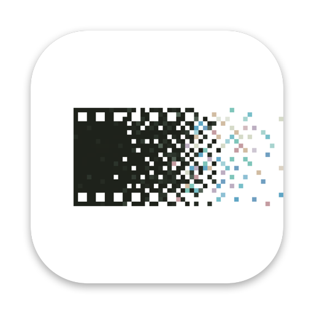

Positives
The free photo editor for Mac, inspired by analogue photography.
A complete editor with a modern, intuitive design: real film looks, grain and light, for every photo you take.
Download Positives
Negatives
A simple tool that turns your film negatives into photos. Photograph or scan them, open the whole roll, done: natural colours, automatically, for any colour or black & white film.
For Macs with Apple silicon (M1 or newer) · macOS 14 Sonoma or newer · Works offline
How to install
Download the app with the button above. It goes to your Downloads folder.
Open the downloaded file. A small window appears.
Drag the app onto the Applications folder in that window.
Open Applications in the Finder and double-click the app.
The first time you open it
The apps are free and made by one person, so they are not registered with Apple. Your Mac asks you to confirm once:
- Double-click the app. A message says Apple could not check it. Click Done.
- Open System Settings → Privacy & Security and scroll down.
- Click Open Anyway next to the app's name, and enter your Mac password.
- Click Open. From now on it opens like any other app.
On macOS 14 Sonoma you can also right-click the app → Open → Open.